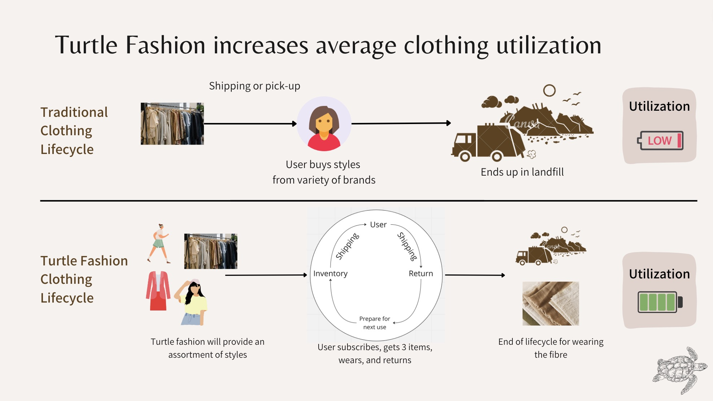
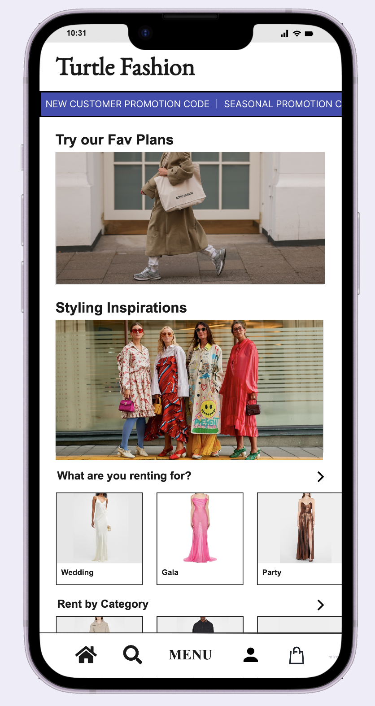
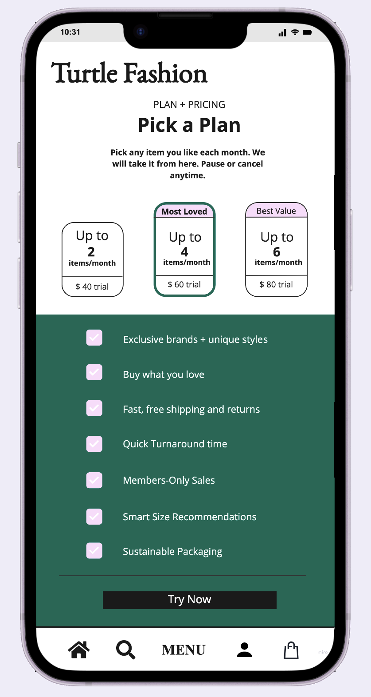

Clothing nowadays has a negative impact on the environment.
Staying in trend with quality clothing is expensive - fast fashion
often used as alternative
Clothing utilization on steady decrease - Reasons include cultural
changes in style, decreased physical durability, and a trend to use
items less often* staying in trend with quality clothing is
expensive - fast fashion often used as alternative
Recycling solutions for clothing aren't good 85% of clothing ends up
in landfill** Fashion industry emits as much GHG as France, Germany
& UK combined***
Turtle Fashion reinvents online shopping for a new generation by
providing a subscription-based rental system
Wide selection of trendy and rising sustainable brands
Personalized styling recommendations
Subscription Plans to save more
Free Shipping and Returns
Why Turtle Fashion is sustainable fashion?

Lifecycle of traditional clothing vs. Turtle Fashion
What our product looks like


Screenshots of what our product looks like